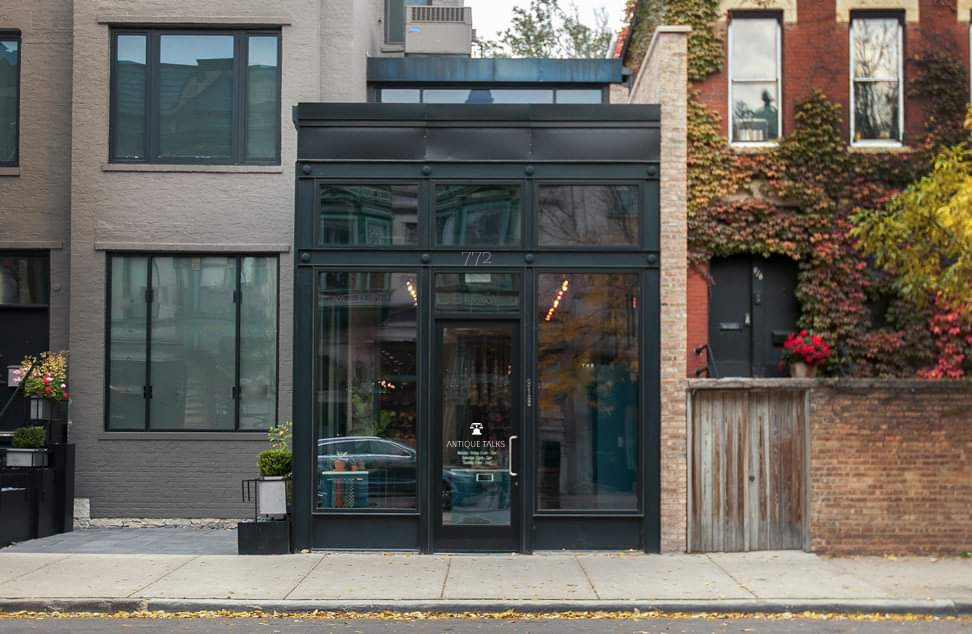

About Us
AntiqueTalk Telephone is not just any antique store; they have a modern minimalist store with a chic look located in downtown Toronto. Their collection of vintage and antique telephones is one of the largest in the area, and they are constantly adding new and unique pieces to their inventory. They offer a range of styles, from the classic rotary dial phones to the Art Deco-inspired designs of the 1930s and 1940s. In addition to their beautiful collection, AntiqueTalk Telephone provides customers with the knowledge and expertise needed to make an informed purchase. Whether you're looking for a functional phone for your home or office or simply want to add a piece of history to your collection, AntiqueTalk Telephone is the place to go.
Thank you for visiting AntiqueTalk Telephone, and we look forward to serving you soon!